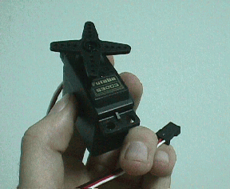
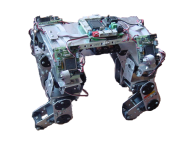
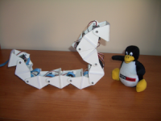
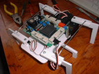
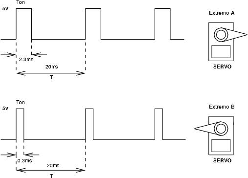
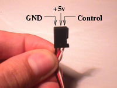
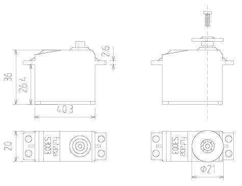
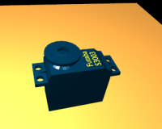
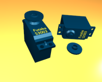

Esta página ya no se mantiene más (30/Nov/2009)
|
Cuaderno técnico 3: Servos Futaba 3003 |

|
|
Esta página ya no se mantiene más (30/Nov/2009) |
Los servos se emplean mucho en aplicaciones de robótica. En este cuaderno nos centraremos en uno de los más comunes y usados: los servos Futaba 3003.
Tienen dos tipos de aplicaciones. Por un lado se pueden "trucar" y convertir en motores de corriente contínua , para construir robots móviles, como por ejemplo el robot de iniciación a la robótica Skybot. Por otro lado se emplean como articulaciones para construir robots articulados, como el perro Puchobot, el gusano Cube Revolutions o el hexápodo Sheila.
|
 |
 |
 |
|
Velocidad: |
0.23 seg/60 grados (260 grados/seg) |
|
Par de salida: |
3.2 Kg-cm (0.314 N.m) |
|
Dimensiones: |
40.4 x 19.8 x 36 mm |
|
Peso: |
37.2 gr |
|
Frec. PWM: |
50Hz (20ms) |
|
Rango giro: |
180 grados |
Los servos se controlan aplicando una señal PWM por su cable de control. Las señales PWM (Pulse Width Modulation, Modulación por anchura de pulso) son digitales (pueden valer 0 ó 1) y permiten que usando un único pin de un microcontrolador podamos posicionar el servo. Esto es una gran ventaja, porque si por ejemplo, disponemos de un micro con 8 pines de salida, podremos posicionar 8 servos.

Para posicionar el servo hay que aplicar una señal periódica, de 50Hz (20ms de periodo). La anchura del pulso determina la posición del servo. Si la anchura es de 2.3ms, el servo se sitúa en un extremo y si la anchura es de 0.3ms se sitúa en el opuesto. Cualquier otra anchura entre 0.3 y 2.3 sitúa el servo en una posición comprendida entre un extremo y otro. Por ejemplo, si queremos que se sitúe exactamente en el centro, aplicamos una anchura de 1.3ms.
Cuando se deja de enviar la señal, el servo entra en un estado de reposo, y por tanto se podrá mover con la mano. Mientras se le aplique la señal, permanecerá fijado en su posición, haciendo fuerza para permanecer en ella.
El servo dispone de un conector al que llegan tres cables. El rojo es el de alimentación (4.5-6 voltios). El negro es masa. Y el blanco es el de la señal de control

Plano de los servos, con cotas en mm. El de la derecha tiene un corona enganchada al eje y el de la izquierda no. Se han realizado usando el programa QCAD que es libre y Multiplataforma (Linux, Windows..). Los planos están en formato .DXF y se pueden leer con Autocad.

En las figuras de abajo puedes ver dos escenarios, con servos virtuales, creados con el programa Blender, libre y multiplataforma (Linux, Windows...). En la izquierda está un servo con su corona. A la derecha hay dos servos, uno con corona y otro sin ella. Tanto el servo como la corona están modelados con el blender, como objetos separados, lo que permite utilizarlos para modelar robots.
|
 |
 |
Este documento se distribuyen bajo licencia FDL por lo que se permite su copia, modificación y distribución, siempre y cuando se mantenga esta nota. Los planos y los modelos en 3D se distribuyen bajo licencia GPL.
|
Cuaderno técnico 3 |
|
planos-futaba.dxf (88KB) |
Planos del servo Futaba 3003, para el programa QCAD |
|
plano-futaba.pdf (70KB) |
Planos del servo, en formato PDF |
|
futaba.blend (210KB) |
Modelo 3D del futaba, para el programa Blender |
|
futabas-2.blend (356KB) |
Escenario virtual con 2 futabas, uno con corona y otro sin ella. para el programa Blender |
Cuaderno Técnico 2 :Trucaje de los servos Futaba 3003
Robot de iniciación Skybot, que usa servos Futaba 3003 trucados para desplazarse.
Puchobot: Un perro robot que utiliza 12 servos
Cube Revolutions: Un robot gusano con 8 servos
Sheila, Robot hexápodo que usa 3 servos
Proyecto Labobot, control de servos usando una FPGA
09/Abril/2007: Mejorado el modelo virtual: Nueva versión de los ficheros futaba.blend y futabas-2.blend. Hecho con Blender 2.42a
08/Abril/2007: Añadidos enlaces a Cube Revolutions y Skybot.
20/Sep/2004:
Añadido enlace al índice de cuadernos técnicos
Nueva version del plano del servo, en formato DFX 2000 (hecho con Qcad 2). Se debería leer correctamente con Autocad
31/Jul/2003: Publicado en la web